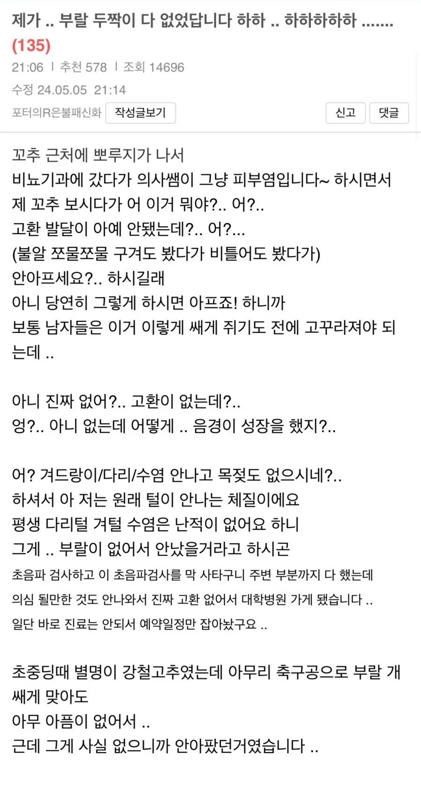
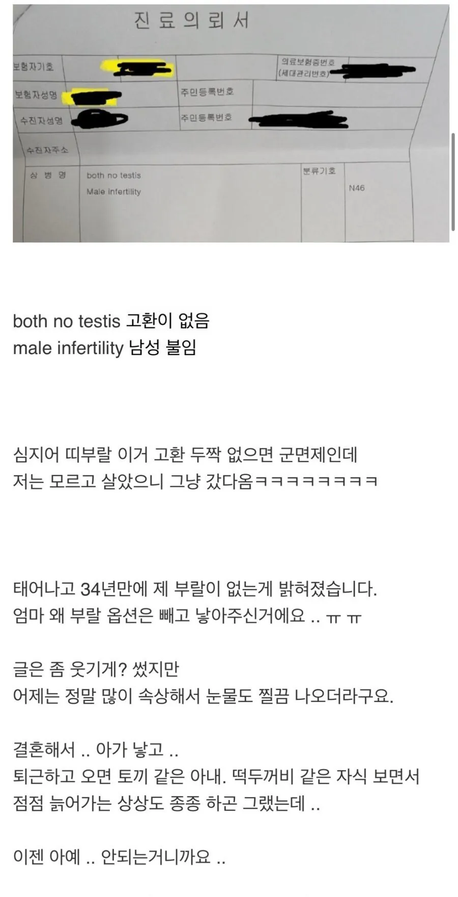

16 · 10 · 1 분 전 · 원문


수집 당시 댓글 10개
헨젤과그랬때 · 4 시간 전
선천성 무고환증인가.........?
깁기 · 4 시간 전
서긴 하겠지?
스크랩보기 · 3 시간 전
회원정보조회수정 · 3 시간 전
하지만 평생 풍성충 당첨 아닌가?
홍두깨왕 · 2 시간 전
자위하면 그럼 정액은 나와도 정자가 없는거지?
거유 · 1 시간 전
알에달린 줄기? 그것만만져도 고꾸라지겟던데
팀홀튼 · 1 시간 전
성호르몬 없이 평생 갱년기 상태로 살아온거네
미츠루기 · 1 시간 전
사실상 진짜 보추잖아….
Rinka029 · 46 분 전
엉?..아니없는데어떻게..음경이성장을했지?.나는왜 성장안했나
물고빨고 · 방금 전
장수하겠네
선천성 무고환증인가.........?